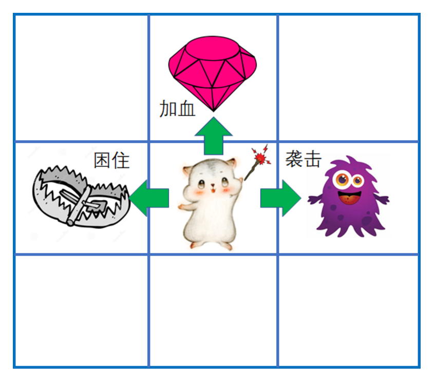

行为型模式概述
行为型模式用于描述程序在运行时复杂的流程控制，即描述多个类或对象之间怎样相互协作共同完成单个对象都无法单独完成的任务，它涉及算法与对象间职责的分配。
行为型模式分为类行为模式和对象行为模式，前者采用继承机制来在类间分派行为，后者采用组合或聚合在对象间分配行为。由于组合关系或聚合关系比继承关系耦合度低，满足“合成复用原则”，所以对象行为模式比类行为模式具有更大的灵活性。
行为型模式是 GoF 设计模式中最为庞大的一类，它包含以下 11 种模式。
- 模板方法（Template Method）模式：定义一个操作中的算法骨架，将算法的一些步骤延迟到子类中，使得子类在可以不改变该算法结构的情况下重定义该算法的某些特定步骤。
- 策略（Strategy）模式：定义了一系列算法，并将每个算法封装起来，使它们可以相互替换，且算法的改变不会影响使用算法的客户。
- 命令（Command）模式：将一个请求封装为一个对象，使发出请求的责任和执行请求的责任分割开。
- 职责链（Chain of Responsibility）模式：把请求从链中的一个对象传到下一个对象，直到请求被响应为止。通过这种方式去除对象之间的耦合。
- 状态（State）模式：允许一个对象在其内部状态发生改变时改变其行为能力。
- 观察者（Observer）模式：多个对象间存在一对多关系，当一个对象发生改变时，把这种改变通知给其他多个对象，从而影响其他对象的行为。
- 中介者（Mediator）模式：定义一个中介对象来简化原有对象之间的交互关系，降低系统中对象间的耦合度，使原有对象之间不必相互了解。
- 迭代器（Iterator）模式：提供一种方法来顺序访问聚合对象中的一系列数据，而不暴露聚合对象的内部表示。
- 访问者（Visitor）模式：在不改变集合元素的前提下，为一个集合中的每个元素提供多种访问方式，即每个元素有多个访问者对象访问。
- 备忘录（Memento）模式：在不破坏封装性的前提下，获取并保存一个对象的内部状态，以便以后恢复它。
- 解释器（Interpreter）模式：提供如何定义语言的文法，以及对语言句子的解释方法，即解释器。
1. 模板方法（Template Method）模式
模板方法（Template Method）模式：定义一个操作中的算法骨架，而将算法的一些步骤延迟到子类中，使得子类可以不改变该算法结构的情况下重定义该算法的某些特定步骤。它是一种类行为型模式。
该模式的主要优点如下。
- 它封装了不变部分，扩展可变部分。它把认为是不变部分的算法封装到父类中实现，而把可变部分算法由子类继承实现，便于子类继续扩展。
- 它在父类中提取了公共的部分代码，便于代码复用。
- 部分方法是由子类实现的，因此子类可以通过扩展方式增加相应的功能，符合开闭原则。
该模式的主要缺点如下。
- 对每个不同的实现都需要定义一个子类，这会导致类的个数增加，系统更加庞大，设计也更加抽象，间接地增加了系统实现的复杂度。
- 父类中的抽象方法由子类实现，子类执行的结果会影响父类的结果，这导致一种反向的控制结构，它提高了代码阅读的难度。
- 由于继承关系自身的缺点，如果父类添加新的抽象方法，则所有子类都要改一遍。
模式的结构与实现
模板方法模式需要注意抽象类与具体子类之间的协作。它用到了虚函数的多态性技术以及“不用调用我，让我来调用你”的反向控制技术。现在来介绍它们的基本结构。（钩子函数）
模式的结构
模板方法模式包含以下主要角色。
1）抽象类/抽象模板（Abstract Class）
抽象模板类，负责给出一个算法的轮廓和骨架。它由一个模板方法和若干个基本方法构成。这些方法的定义如下。
① 模板方法：定义了算法的骨架，按某种顺序调用其包含的基本方法。
② 基本方法：是整个算法中的一个步骤，包含以下几种类型。
- 抽象方法：在抽象类中声明，由具体子类实现。
- 具体方法：在抽象类中已经实现，在具体子类中可以继承或重写它。
- 钩子方法：在抽象类中已经实现，包括用于判断的逻辑方法和需要子类重写的空方法两种

模式的应用场景
模板方法模式通常适用于以下场景。
- 算法的整体步骤很固定，但其中个别部分易变时，这时候可以使用模板方法模式，将容易变的部分抽象出来，供子类实现。
- 当多个子类存在公共的行为时，可以将其提取出来并集中到一个公共父类中以避免代码重复。首先，要识别现有代码中的不同之处，并且将不同之处分离为新的操作。最后，用一个调用这些新的操作的模板方法来替换这些不同的代码。
- 当需要控制子类的扩展时，模板方法只在特定点调用钩子操作，这样就只允许在这些点进行扩展。
模板方法在AQS种的应用：

2. 命令（Command）模式
命令（Command）模式：将一个请求封装为一个对象，使发出请求的责任和执行请求的责任分割开。这样两者之间通过命令对象进行沟通，这样方便将命令对象进行储存、传递、调用、增加与管理。
在现实生活中，命令模式的例子也很多。比如看电视时，我们只需要轻轻一按遥控器就能完成频道的切换，这就是命令模式，将换台请求和换台处理完全解耦了。电视机遥控器（命令发送者）通过按钮（具体命令）来遥控电视机（命令接收者）。
再比如，我们去餐厅吃饭，菜单不是等到客人来了之后才定制的，而是已经预先配置好的。这样，客人来了就只需要点菜，而不是任由客人临时定制。餐厅提供的菜单就相当于把请求和处理进行了解耦，这就是命令模式的体现。
命令模式的主要优点如下。
- 通过引入中间件（抽象接口）降低系统的耦合度。
- 扩展性良好，增加或删除命令非常方便。采用命令模式增加与删除命令不会影响其他类，且满足“开闭原则”。
- 可以实现宏命令。命令模式可以与组合模式结合，将多个命令装配成一个组合命令，即宏命令。
- 方便实现 Undo 和 Redo 操作。命令模式可以与后面介绍的备忘录模式结合，实现命令的撤销与恢复。
- 可以在现有命令的基础上，增加额外功能。比如日志记录，结合装饰器模式会更加灵活。
其缺点是：
- 可能产生大量具体的命令类。因为每一个具体操作都需要设计一个具体命令类，这会增加系统的复杂性。
- 命令模式的结果其实就是接收方的执行结果，但是为了以命令的形式进行架构、解耦请求与实现，引入了额外类型结构（引入了请求方与抽象命令接口），增加了理解上的困难。不过这也是设计模式的通病，抽象必然会额外增加类的数量，代码抽离肯定比代码聚合更加难理解。
命令模式的结构与实现
可以将系统中的相关操作抽象成命令，使调用者与实现者相关分离，其结构如下。
模式的结构
命令模式包含以下主要角色。
- 抽象命令类（Command）角色：声明执行命令的接口，拥有执行命令的抽象方法 execute()。
- 具体命令类（Concrete Command）角色：是抽象命令类的具体实现类，它拥有接收者对象，并通过调用接收者的功能来完成命令要执行的操作。
- 实现者/接收者（Receiver）角色：执行命令功能的相关操作，是具体命令对象业务的真正实现者。
- 调用者/请求者（Invoker）角色：是请求的发送者，它通常拥有很多的命令对象，并通过访问命令对象来执行相关请求，它不直接访问接收者。


3. 访问者（Visitor）模式
将作用于某种数据结构中的各元素的操作分离出来封装成独立的类，使其在不改变数据结构的前提下可以添加作用于这些元素的新的操作，为数据结构中的每个元素提供多种访问方式。它将对数据的操作与数据结构进行分离，是行为类模式中最复杂的一种模式。
访问者模式主要应用场景是:需要对一个对象结构中的对象进行很多不同操作(这些操作彼此没有关联)，同时需要避免让这些操作”污染”这些对象的类，可以选用访问者模式解决
访问者（Visitor）模式是一种对象行为型模式，其主要优点如下。
- 扩展性好。能够在不修改对象结构中的元素的情况下，为对象结构中的元素添加新的功能。
- 复用性好。可以通过访问者来定义整个对象结构通用的功能，从而提高系统的复用程度。
- 灵活性好。访问者模式将数据结构与作用于结构上的操作解耦，使得操作集合可相对自由地演化而不影响系统的数据结构。
- 符合单一职责原则。访问者模式把相关的行为封装在一起，构成一个访问者，使每一个访问者的功能都比较单一。
访问者（Visitor）模式的主要缺点如下。
- 增加新的元素类很困难。在访问者模式中，每增加一个新的元素类，都要在每一个具体访问者类中增加相应的具体操作，这违背了“开闭原则”。
- 破坏封装。访问者模式中具体元素对访问者公布细节，这破坏了对象的封装性。
- 违反了依赖倒置原则。访问者模式依赖了具体类，而没有依赖抽象类。
模式的结构与实现
访问者（Visitor）模式实现的关键是如何将作用于元素的操作分离出来封装成独立的类。
模式的结构
访问者模式包含以下主要角色。
- 抽象访问者（Visitor）角色：定义一个访问具体元素的接口，为每个具体元素类对应一个访问操作 visit() ，该操作中的参数类型标识了被访问的具体元素。
- 具体访问者（ConcreteVisitor）角色：实现抽象访问者角色中声明的各个访问操作，确定访问者访问一个元素时该做什么。
- 抽象元素（Element）角色：声明一个包含接受操作 accept() 的接口，被接受的访问者对象作为 accept() 方法的参数。
- 具体元素（ConcreteElement）角色：实现抽象元素角色提供的 accept() 操作，其方法体通常都是 visitor.visit(this) ，另外具体元素中可能还包含本身业务逻辑的相关操作。
- 对象结构（Object Structure）角色：是一个包含元素角色的容器，提供让访问者对象遍历容器中的所有元素的方法，通常由 List、Set、Map 等聚合类实现。

4. 观察者（Observer）模式
模式的定义与特点
观察者（Observer）模式的定义：指多个对象间存在一对多的依赖关系，当一个对象的状态发生改变时，所有依赖于它的对象都得到通知并被自动更新。这种模式有时又称作发布-订阅模式、模型-视图模式，它是对象行为型模式。
观察者模式是一种对象行为型模式，其主要优点如下。
- 降低了目标与观察者之间的耦合关系，两者之间是抽象耦合关系。符合依赖倒置原则。
- 目标与观察者之间建立了一套触发机制。
它的主要缺点如下。
- 目标与观察者之间的依赖关系并没有完全解除，而且有可能出现循环引用。
- 当观察者对象很多时，通知的发布会花费很多时间，影响程序的效率。
模式的结构与实现
实现观察者模式时要注意具体目标对象和具体观察者对象之间不能直接调用，否则将使两者之间紧密耦合起来，这违反了面向对象的设计原则。
1. 模式的结构
观察者模式的主要角色如下。
- 抽象主题（Subject）角色：也叫抽象目标类，它提供了一个用于保存观察者对象的聚集类和增加、删除观察者对象的方法，以及通知所有观察者的抽象方法。
- 具体主题（Concrete Subject）角色：也叫具体目标类，它实现抽象目标中的通知方法，当具体主题的内部状态发生改变时，通知所有注册过的观察者对象。
- 抽象观察者（Observer）角色：它是一个抽象类或接口，它包含了一个更新自己的抽象方法，当接到具体主题的更改通知时被调用。
- 具体观察者（Concrete Observer）角色：实现抽象观察者中定义的抽象方法，以便在得到目标的更改通知时更新自身的状态。
example1：
在这个小游戏里，有一个迷宫，迷宫里有怪物、陷阱和宝物

一旦主角移动到怪物的有效范围，怪物会袭击主角；主角移动到陷阱的有效范围，陷阱会困住主角；主角移动到宝物的有效范围，宝物会为主角加血。



Java集成了访问者模式 ****
在 Java 中，通过 java.util.Observable 类和 java.util.Observer 接口定义了观察者模式，只要实现它们的子类就可以编写观察者模式实例。
1. Observable类
Observable 类是抽象目标类，它有一个 Vector 向量，用于保存所有要通知的观察者对象，下面来介绍它最重要的 3 个方法。
- void addObserver(Observer o) 方法：用于将新的观察者对象添加到向量中。
- void notifyObservers(Object arg) 方法：调用向量中的所有观察者对象的 update() 方法，通知它们数据发生改变。通常越晚加入向量的观察者越先得到通知。
- void setChange() 方法：用来设置一个 boolean 类型的内部标志位，注明目标对象发生了变化。当它为真时，notifyObservers() 才会通知观察者。（protected修饰，需要子类调用，只有调用后，相应的通知才会被执行）
2. Observer 接口
Observer 接口是抽象观察者，它监视目标对象的变化，当目标对象发生变化时，观察者得到通知，并调用 void update(Observable o,Object arg) 方法，进行相应的工作。
Example2
分析：当原油价格上涨时，空方伤心，多方局兴；当油价下跌时，空方局兴，多方伤心。本实例中的抽象目标（Observable）类在 Java 中已经定义，可以直接定义其子类，即原油期货（OilFutures）类，它是具体目标类，该类中定义一个 SetPriCe(float price) 方法，当原油数据发生变化时调用其父类的 notifyObservers(Object arg) 方法来通知所有观察者；另外，本实例中的抽象观察者接口（Observer）在 Java 中已经定义，只要定义其子类，即具体观察者类（包括多方类 Bull 和空方类 Bear），并实现 update(Observable o,Object arg) 方法即可


5. 发布订阅模式：(事件驱动模式/观察者模式）
事件驱动模式
java的事件机制一般包括三个部分：EventObject，EventListener和Source。
EventObject
java.util.EventObject是事件状态对象的基类，它封装了事件源对象以及和事件相关的信息。所有java的事件类都需要继承该类。
EventListener
java.util.EventListener是一个标记接口，就是说该接口内是没有任何方法的。所有事件监听器都需要实现该接口。事件监听器注册在事件源上，当事件源的属性或状态改变的时候，调用相应监听器内的回调方法。
Source
事件源不需要实现或继承任何接口或类，它是事件最初发生的地方。因为事件源需要注册事件监听器，所以事件源内需要有相应的盛放事件监听器的容器。
发布订阅模式与观察者模式区别
发布订阅模式与观察者区别:
- 发布订阅模式中,发布者不需要知道订阅者的存在;（区别）
- 观察者模式中,目标需要知道观察者的存在;
- 发布订阅模式中,存在事件通道,对发布者和订阅者进行了解耦;（区别）
- 观察者模式中，目标和观察者之间是依赖的;

事件驱动编程解决方案

java与spring的支持

Spring事件驱动编程实战